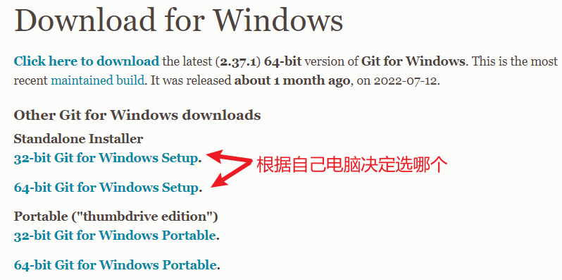
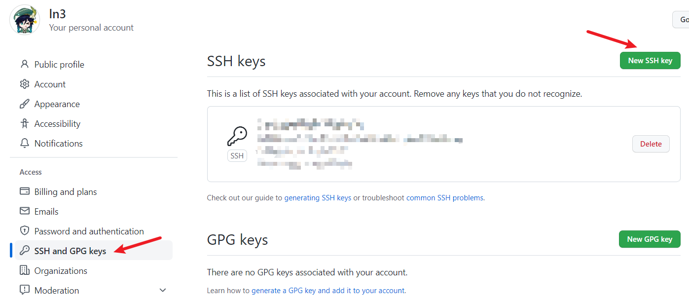
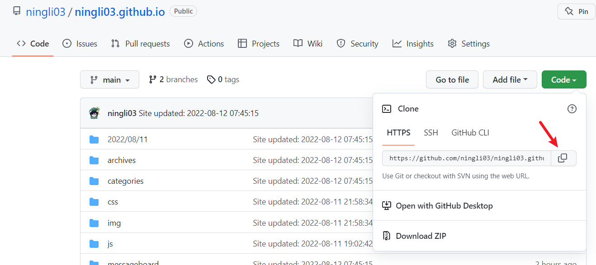
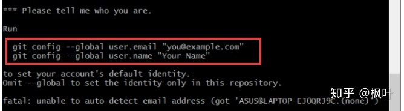

hexo+github搭建个人博客（一）
问：搭建个人博客需要什么呢？
答：只需要耐心
前言
你需要在遇到问题时自己去网上查找答案，有时候一个问题就要查半天，最后还有可能没解决，目前网上的教程大都时间较长远了，操作起来会遇到各种问题，故做此教程以给新手避坑。
目录
[TOC]
github与git
注册github
很简单，需要一个电子邮箱，注册个人免费版即可，网址在这，略
安装git
点击 downloads -> 选择系统 -> 下载 -> 一路next(可以更换安装地址) -> 安装成功！
测试：
右键，点击 Git Bash Here，输入 git，回车
绑定git与github
首先我们得在 GitHub 上添加 SSH key 配置，要想生成SSH key，就要先安装 SSH，不过我们安装了 Git Bash，其应该自带了 SSH。检验一下是否安装 SSH，我们右键打开 Git Bash，输入 ssh，回车
然后，输入 ssh-keygen -t rsa 命令（注意空格），表示我们指定 RSA 算法生成密钥，然后敲四次回车键，之后就就会生成两个文件，分别为秘钥 id_rsa 和公钥 id_rsa.pub（**注意：git中的复制粘贴不是 Ctrl+C 和 Ctrl+V，而是 Ctrl+insert 和 Shift+insert.**）文件的位置在 Git Bash 上面都有显示
接下来我们要做的事情就是把公钥 id_rsa.pub 的内容添加到 GitHub。复制公钥 id_rsa.pub 文件里的内容，你可以通过目录找到 id_rsa.pub 文件的位置，用记事本打开文件复制。如果你实在找不到文件也没有关系，按照以下步骤直接在 Git Bash 上打开就行：
1 | $ cd ~/.ssh |
复制是 ctrl+insert 哦，别搞错了
接下来进入我们的 GitHub 主页，先点击右上角，再点击 settings，然后 SSH and GPG keys，最后 New SSH key，将复制的公钥 id_rsa.pub 的内容粘贴到 key 内，再点击 Add SSH key
测试：
右键打开gitbash，输入 ssh -T git@github.com，回车，可能会出现这种情况，输入 yes 即可
尝试提交文件
这一步只是测试，跟着步骤做完后可以把本地仓库和上传上去的文件删掉
首先通过 github 建立一个仓库，复制仓库地址
在桌面右键打开 gitbash，输入 git clone ...(刚复制的地址)，将远程仓库 clone 到本地
现在我们在刚才克隆下来的文件夹里创建一个 text.txt 测试文件，在这个文件夹里右键打开 gitbash，我们使用 git add 命令将文件添加到了「临时缓冲区」，再用 git commit -m "提交信息" 将其提交到本地仓库
如果你是第一次提交的话，就会出现下图的情况，会让你输入用户名和邮箱：
1 | #你只要再加两行代码就行： |
现在输入 git push origin main 命令，将本地仓库提交到远程仓库，origin是远程主机的名字：
第一次上传需要输入密码，上传成功后刷新github远程仓库页面，可以看到被提交上去的test.txt
未完待续…
 微信
微信 支付宝
支付宝